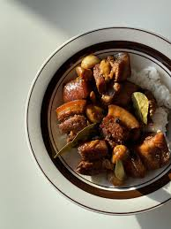

HOME
Chicken Adobo

This Chicken adobo recipe is simple to make and loved by
all who try it! It has been modified to be a
bit saucier than adobo and is delicious served over rice.
Ingredients
- 4 tablespoons vegetable oil
- 2 (3 pound) chicken, cut into pieces
- 2 large onion, quartered and sliced
- 4 tablespoons minced garlic
- 1 ⅓ cups low sodium soy sauce
- ⅔ cup white vinegar
- 2 tablespoons garlic powder
- 4 teaspoons black pepper
- 2 bay leaf
Direction
- Heat vegetable oil in a large skillet over medium-high heat. Cook chicken pieces until golden brown, 2 to 3 minutes per side. Transfer chicken to a plate and set aside.
- Heat vegetable oil in a large skillet over medium-high heat. Cook chicken pieces until golden Add onion and garlic to the skillet; cook until softened and brown, about 3 to 5 minutes.
- Pour in soy sauce and vinegar and season with garlic powder, black pepper, and bay leaf.
- Return chicken to pan, increase heat to high, and bring to a boil. Reduce heat to medium-low, cover, and simmer until chicken is tender and cooked through, 35 to 40 minutes.